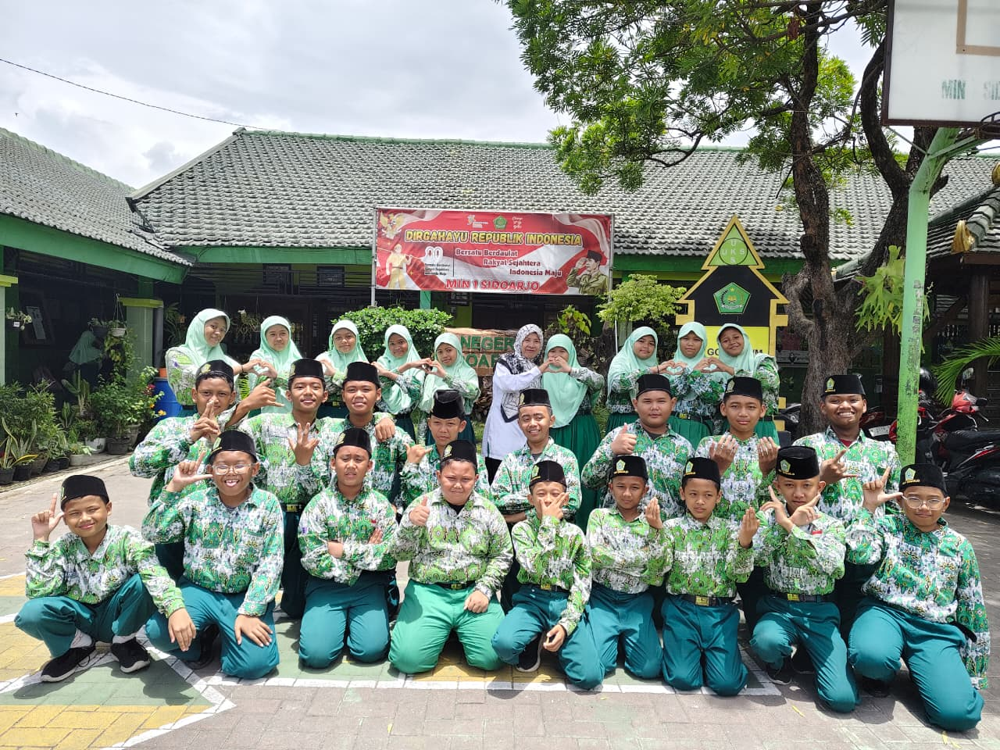
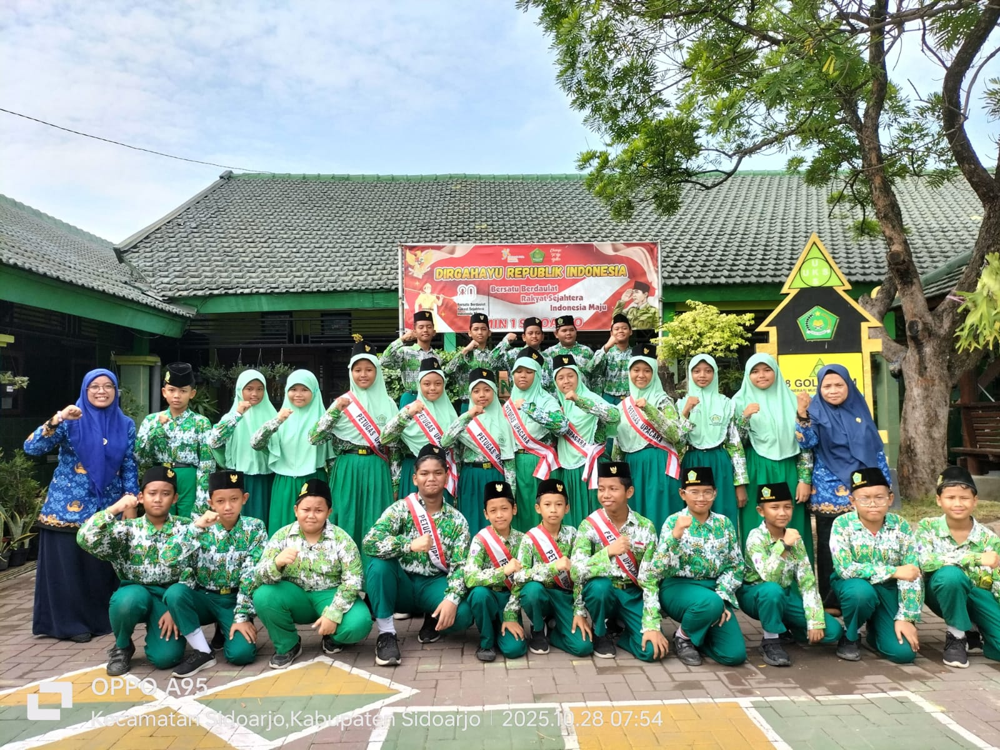
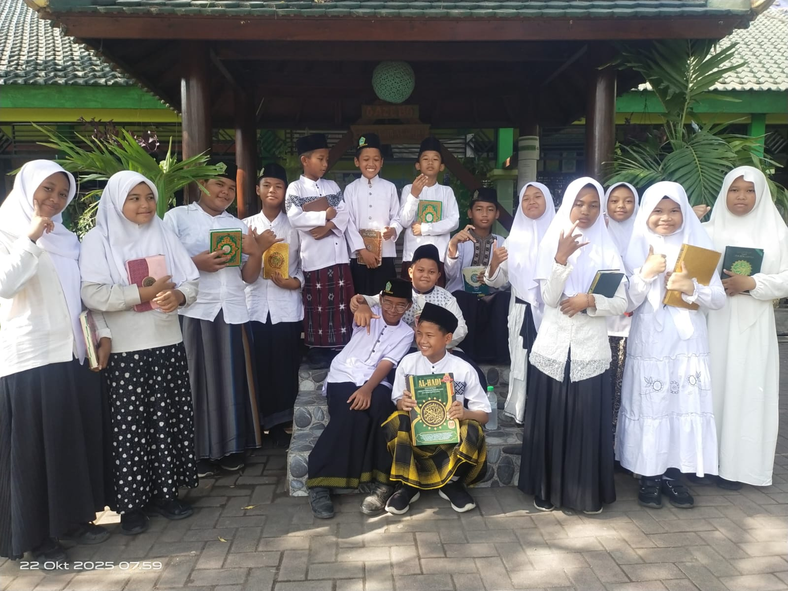

Melangkah Meraih
Cita-Cita Bersama
Satu langkah, seribu perubahan untuk aksi nyata
Assalamu’alaikum Wr. Wb. Dengan hormat, sehubungan dengan telah berakhirnya Tahun Ajaran 2025/2026, kami selaku keluarga besar Madrasah Ibtidaiyah Negeri 1 Sidoarjo bermaksud menyelenggarakan acara "Penyerahan Kembali Peserta Didik Madrasah Ibtidaiyah Negeri 1 Sidoarjo" Kelas VI Tahun Ajaran 2025/2026.
Informasi Acara
Pelaksanaan Pelepasan
Berkenaan dengan hal tersebut, kami sangat mengharapkan kehadiran Bapak/Ibu Wali Murid beserta Ananda pada acara tersebut yang akan dilaksanakan pada:
Waktu
Sabtu, 13 Juni 2026
Pukul 08.00 - Selesai
Tempat
Halaman MIN 1 Sidoarjo
Jl. Balai Desa BanjarKemantren
Rundown
Susunan Acara
Registrasi
06.40 - 07.00Diharapkan datang sebelum jam 07.00
Pra Acara
07:30Penampilan menyanyi, Tarian tradisional
Pra Opening Ceremony
08:00Menyanyikan lagu Indonesia Raya dan Mars MIN 1 Sidoarjo
Opening Ceremony
08:15- Pembukaan
- Pembacaan ayat suci Al-Qur'an dari kelas 1
- Pildacil bahasa Indonesia kelas 1
- Penampilan Standar Kompetensi Kelulusan
Acara Inti
09:30- Sambutan Kepala MIN 1 Sidoarjo
- Sambutan perwakilan Wali Murid
- Sambutan Kepala Kantor Kemenag
Pra Prosesi
11:00- Paduan Suara Kelas 6
- Penyampaian Siswa Berprestasi
- Penyampaian Tali Asih
Prosesi Penyerahan Kembali
11:30- Prosesi
- Do'a
- Sungkeman
Closing Ceremony
12:30Acara ditutup dengan Foto Bersama seluruh peserta didik, pengisi acara, dan dewan guru beserta staf.
Aturan Pakaian
(Dresscode)
Laki-laki
Atasan putih, bawah hitam, songkok hitam polos
Perempuan
Gaun muslimah warna soft (pastel)
Kenangan Manis
Momen berharga yang tak akan terlupakan



Demikian surat undangan ini kami sampaikan. Mengingat pentingnya acara ini, kehadiran dan dukungan Bapak/Ibu Wali Murid sangat kami harapkan.
Atas perhatian dan kehadiran Bapak/Ibu, kami ucapkan terima kasih.